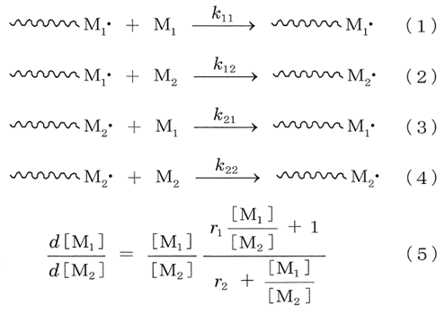
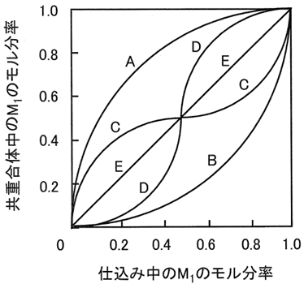

平成23年度 問15 高分子化学
2種のビニルモノマー（M1とM2）間のラジカル共重合における下記の成長反応（1）～（4）の成長速度定数をそれぞれk11、k12、k21、k22とする。重合初期に得られる共重合体組成（d[M1] / d [M2]）は、仕込みモノマー組成（[M1] / [M2]）とモノマー反応性比（r1 = k11 / k12、r2 = k22 / k21）を用いて式（5）で表される。ただし、[M1]、[M2] はモノマー濃度である。

下図の共重合組成曲線のうち、曲線Cは、仕込みモノマー組成（[M1] / [M2]）が非常に小さい（グラフの左端寄り）ときは共重合体組成（d[M1] / d [M2]）が仕込みモノマー組成より大きく、逆に仕込みモノマー組成（[M1] / [M2]）が非常に大きい（グラフ右端寄り）ときは共重合体組成が仕込みモノマー組成より小さいことを示しており、式（5）を近似すればr1 ＜ 1、r2 ＜ 1 であることがわかる。

曲線Aの場合のモノマー反応性比として適切なものはどれか。
①
r 1 ＞ 1、r 2 ＜ 1
②
r 1 ＝ 1、r 2 ＜ 1
③
r 1 ＝ 1、r 2 ＝ 1
④
r 1 ＜ 1、r 2 ＞ 1
⑤
r 1 ＞ 1、r 2 ＞ 1
正答
① r 1 ＞ 1、r 2 ＜ 1
曲線Aにおいて、常に仕込み中のM1モル分率の方が共重合体中のM1モル分率よりも大きな値です。モル分率で表されていることから、M2では逆の結果となります。仕込み中のM2モル分率の方が共重合体中のM2モル分率よりも小さな値です。
上記結果より、M1の方がM2よりも重合速度が速いことを意味します。よってk11＞k12、k22＜k21となることからr1＞1、r2＜1です。